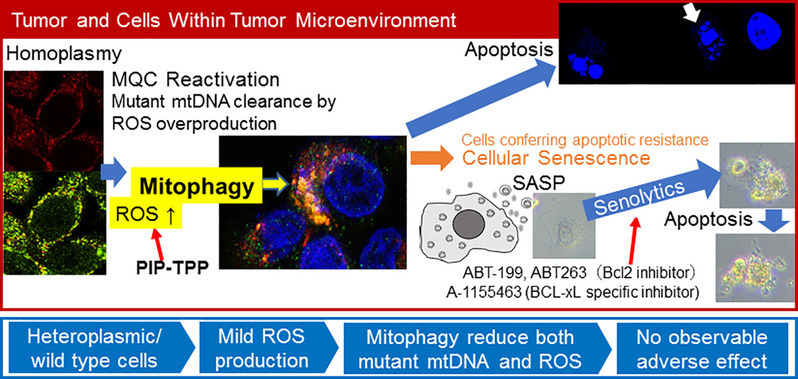

Research Projects
Off-Target Effects of Motif-Specific DNA Minor-Groove Binders
(Reference: Lin & Nagase, Biomoleules 10, 2020)A major focus of the Laboratory of Cancer Genetics at Chiba Cancer Center, a medical center for oncology established and operated by the Chiba Prefectural Government, is the development of N-methylpyrrole-N-methylimidazole polyamides (pyrrole-imidazole polyamides, PIPs) as potential therapeutic candidates for cancer precision medicine. Inspired by distamycin, a naturally occuring DNA-binding antibiotic, these polyamides are able to differentiate their respective nucleoside targets down to single hydrogen-bond precisions, and can be easily prepared using solid-phase peptide synthetic techiniques. Recent studies have also found PIPs useful in, at the nucleic acid level, antagonizing "undruggable" biological targets that are otherwise difficult to inhibit at the protein level due to a number of issues such as solvent accessibility and lack of ligand binding pockets. However, as these molecules have recognition motifs within the range of 8 to 10 bases long, the possibility of off-target binding cannot be discounted. My research interest in this area involve the use of next-generation sequencing and transciptome analysis to infer locations of off-target binding and their possible effects.
Genomics Analysis
(Reference: Lin et al, JOSS 10, 2019)Along with elucidating the binding effects of pyrrole-imidazole polyamides, I also have been trying to develop tools and analytical pipelines for analytical next-generating sequencing data for IonTorrent and Pacbio-based sequencing tools. Example illustrated here is a light ChIP-seq peak callingt ool called CRED, developed specifically for Chem-seq data analysis. Aside from short-read sequencing, I am also in the process of developing and improving various long-read sequencing pipelines for evaluating clinical specimens by PacBio's Iso-seq method.
Epidemiological Studies
(Reference: Kusakabe et al, PeerJ 10, 2021)With our collaboration with the Cancer Prevention Center (a.k.a. Division of Cancer Prevention and Epidemiology) at CCCRI, we conduct statistical analysis and exploratory studies of the various datasets containing registries of cancer incidence and epidemiological studies both in Chiba and also the Japan Multi-Institutional Collaborative Cohort (J-MICC) Study. The illustration is our current collaboration with Renatech Co. in the development of Metallo-balance, a large-scale cancer screening method, in which we performed exploratory analysis and tried to understand how to interpret Metallo-balance results with possible cancer incidence.
Effect of Epigenomic Manipulation on Metabolism by Machine Learning
This is a project that stemmed from my work on evaluating off-target effects of PI polyamides, with which we originally developed SAHA-conjugated derviatives for cancer therapy. SAHA, or Vorinostat by Merck, is a histone deacetylase inhibitor (HDI), a class of molecules that affect the epigenome and allow genes silenced by the act of histone deacetlyation to become transcribable again. This project focuses on the use of machine learning to elucidate the biological underpinnings of HDIs' mode of action by collating various publicly available and in-house generated datasets to understand their activity a priori, possible unwanted effects, and explore how HDIs in general regulate cancer genomes by tools like alphaFold2 and convolutional neural networks for activity prediction. In addition, our collaboration with clinicians in radiology have also prompted an interest into trying to decipher potential epigenetic marker signatures from computed tomographic images as well. JSPS provides most of the funding for projects related to this through my Early Career Investigator Grant-in-Aids (科研費若手研究), and I have also received support in the form of computing hardware from Nvidia as the recipient of the Academic Hardware Grant.
Synthetic modulators of mitochondrial diseases
(Reference: Nagase et al, Cancer Science 112, 2021) This is a project with the Laboratory of Cancer Genetics, where we conjugate pyrrole-imidazole polyamides with a triphenylphosphonium (TPP) cation in order to direct these motif specific DNA minor-groove binders into the mitochondria. Upon permeation, these PI polyamides then target various loci in mitochondrial DNA (mtDNA) to induce apoptosis via the virtue of frequently observed homoplasmic shifts in cancer cells. Through this project, we are currently performing experiments to understand the underlying biological mechanism behind this phenamenon, and at at the same exploring the possibility of alterating heteroplasmic ratios as a potential therapeutic method for mitochondrial diseases. Most of this work is funded by AMED's Intractable and Rare Diseases Project (難治性疾患実用化研究事業).